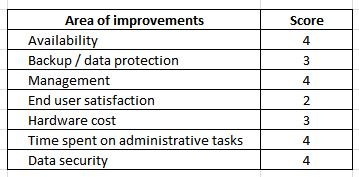
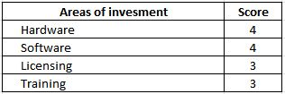
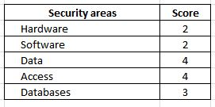

Findings and Discussion
This page shows findings from primary research about impact of virtualisation on small to medium-sized businesses. Documentantion is provided and specific issues are relatite to professional scope. Second section provides discussion about the research, finginds and futher information.
Research Findings
Main goal of the research was to find small to mid-sized businesses which are using virtual infrastructure as a part of their business. It was intended to discuss benefits and drawbacks that virtualisation brings into a business and also how effective virtual solutions are towards investments.
First step of the research was to locate small business and try to communicate with them. This step proved to the most difficult task, because businesses do not want to discuss their internal IT infrastructure because of security reasons. In the end only one business, Lukapo, a.s. agreed on completing a questioner and finish short interview. Lukapo, a. s. is an IT company from Czech republic.
Virtualisation is rapidly adopted by small businesses and provides significant benefits in several areas. In this scenario, 3 questions were asked through questioner and another 3 questions were asked in a short interview.
______________________________________________________________________________________________
Questioner
Question 1
On scale 1 to 5 (1 – no improvements, 5 – huge improvements), how would you describe impact of virtualisation on your business in these areas?
As you can see on the picture above, Lukapo improved their services by using virtualisation tools. They are using open source virtualisation solution called Proxmox. This platform runs on the top of Debian Linux operating system and it is fully configurable. The best results were found in Availability and Management. When using Proxmox, resources are easily divided and managed by Web browser client, similarly to VMware’s vSphere. It also decreased time invested into repetitive administrative tasks and improve security of their systems.
Question 2
On scale 1 to 5 (1 – no effective, 5 – highly effective), how would you describe impact of virtualisation according to your investments?
Next question that has been asked was impact towards investment into virtualisation. As you can see at the picture above, virtualisation provided huge savings in software and hardware. Software that is being used is open source and therefore there is no cost. However there is additional cost of training that need to be provided, because advanced knowledge of Linux OS is required. Virtualisation also provided huge savings towards hardware, where only few physical servers can be divided into much more virtual servers.
Question 3
On scale 1 to 5 (1 – no improvements, 5 – huge improvements), how would you describe impact of virtualisation on your business regarding security issues?
As shown at the picture above, security of hardware itself has not changed that much. Because of decreased amount of physical server, servers can be fit into one smaller room with improved security lock and camera aiming at the door. Security of software has not changed too much either. Only the workload is divided and managed better. However security of data and access to the data has changed massively. Data are backed up regularly and are accessible only through VPNs. Also databases are more protected. Databases have been moved to AWS and are managed through their console.
______________________________________________________________________________________________
Interview
Question 1
How would you describe whole process of adopting virtualisation?"The whole process was not that difficult, however it was very time consuming. Planning and preparation were two the most difficult parts. Deployment was done over 3 days, because everything was prepared and ready."
Question 2
How virtualisation improved your systems efficiency?“Efficiency has increased mostly because management is easier and administrative tasks were minimise to bearable amount. It makes planning, troubleshooting and fixing problems so much easier. All the systems are monitored from one web interface and errors is being bring to our attention nearly instantly.”
Question 3
Can you imagine your systems running the old hardware way?“There is no way we would ever return to the old way. Because of usage of VPNs and SSH, we are able to monitor and manage servers from anywhere. Virtualisation is definitely positive step for any business that wants to make their IT management simple.”
Results discussion
This research provided a lot of new information about how virtualisation is accepted by businesses in general. Interview provided interesting insight into a small company from Czech Republic and their approach to virtual infrastructure. As has been said in Professional scope Chapter, VMware White paper (2009) states that small to mid-sized businesses see virtualisation as step towards easier managements and money saving, while providing increased performance and security for their IT infrastructure. This leads us to think that virtualisation for small businesses is an open field where we would like to do further research in the future.
Result of this research is only partial success for us. Answers were what we expected, however the number of participants were highly below our expectations. Problems were found when communicating with companies. Usually when we have contacted a company, we could not reach IT services. When we reached IT services, they were unable to provide us with information we needed because of security barrier. This is step where we definitely need improvements. Communication would be something to look at and improve when undertaking next research.